Top 50 Albums of 2011 (Part Two)
By No Ripcord Staff
The jury is out on whether 2011 was a vintage year for music, but it was certainly a rich and varied one, as our albums of the year list showcases. 26 writers casting 390 votes for 207 different records has come to this - the final list on the music that thrilled us, moved us, made us smile, made us cry, made us dance, caused our hearts to race, soundtracked our lives, completely immersed us and got us typing furiously in 2011. We hope you enjoy the list - if you do, why not tweet a link to it or share it on Facebook? You can also get involved in lively debate using the Disqus box at the bottom of the page.
This list is a pretty huge undertaking on an annual basis. We won't be resting on our laurels here at No Ripcord though - we're already planning for 2012 and we hope to see you there. Merry Christmas and a Happy New Year to all our readers. Joe Rivers, Features Editor
If you've missed numbers 50-26, click here.
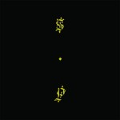25. Shabazz Palaces
"Black Up"
(Sub Pop)
Click here for our original review
Click here for our original review
The exciting thing about music in 2011 is how there's a platform for the weirdest, most anti-commercial facets of every genre - perhaps most notably with Shabazz Palaces' effortlessly unique deconstruction of hip-hop, Black Up. Ishmael Butler (formerly of 90s jazz-rap grammy winners Digable Planets) spits over beats so murky and unstable you'd think it'd be impossible to flow over them, yet he does so with a densely abstract lyricism which can be difficult to follow - such is the enigma of Black Up. Diss track, Yeah You, sounds like it's aimed at mainstream rap as a whole, as Butler assumes a hyper-literate approximation of hip-hop aggression, to ridicule the mindlessness of his peers. It is a wonderfully odd album, full of potent, subversive darkness. (Stephen Wragg)
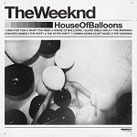24. The Weeknd
"House of Balloons"
(self-released)
House of Balloons didn’t hit me as great at first. I remember when it finally did, and it was driving at 2am, trying to climb a mountain in a brief weather window. It was dark and rainy, and I had Loft Music in my head all the way up the snowy slopes. At around 5am I got a text from a friend back home: “dude, The Weeknd is fucking awesome.” It was in my head; its dark, sinful picture of an empty and hollow man was in my head, and it would be a while before it left. Abel Tesfaye paints a disturbing portrait of a trapped life, a life he always wanted but one that has left him dead inside. He remarkably opens up this painful world to the rest of us, and makes you feel every word he sings. (Andrew Baer)
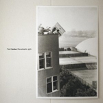23. Tim Hecker
"Ravedeath, 1972"
(Kranky)
It’s easy to see the favoritism playing out between consumers and entertainment technology these days. High-definition televisions and three-dimensional movie theatres have quickly become universal quality standards whereas, in the same breath, lousily ripped mp3s and torrents have become the musical norm. The record industry is in a state of collapse – sure, we all know that – but so is the value of music as art. No album points this out as hypnotically as Ravedeath, 1972. Using a two-day church organ session as foundation, Tim Hecker took these twelve compositions to dust, disassembling their solemn appeal (available on the companion release Dropped Pianos) and battering them with serrated, digital fuzz. Despite such a minimal palette, what blossoms from Hecker’s decay is nothing short of earthshaking; a darkly persuasive tapestry of abused sounds rising for redemption. Of course, all of the loose music-versus-culture theory stirred up by Hecker’s approach would mean nothing without his melodic spare parts assembling into something compelling. And luckily for us, Ravedeath, 1972’s conflicted heart is downright intoxicating. (Ryan Pratt)
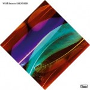22. Wild Beasts
"Smother"
(Domino)
Growing up in Cumbria in the 90s, there was very little to shout about in terms of a local music scene. I imagine little has changed in that sense, but thanks to two groups of Cumbrian ex-pats, we at least have some local musical heroes to cherish. British Sea Power were the trailblazers, but in recent years, Wild Beasts have emerged as the premier band with Cumbrian roots. Although musically more understated than its predecessor, the 2009 breakthrough Two Dancers, Smother is arguably Wild Beasts' strongest album to date. The band's trademark tales of sexual depravity fit more comfortably alongside the sensual groove of tracks like Bed of Nails and Plaything, and what Smother lacks in immediacy - there's nothing quite like Hooting & Howling or All The King's Men here - it more than makes up for in depth and consistency. How it missed out on a Mercury nomination, I'll never know. (David Coleman)
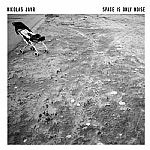21. Nicolas Jaar
"Space Is Only Noise"
(Circus Company)
Space Is Only Noise, a record that defies categorization like no other in 2011, was my personal favorite this year. It wasn’t right away. I liked it at first, but didn’t adore it. I played it a lot when
I reviewed it last winter, but not much after that. I put it on again last summer, and it blew me away. It’s a cohesive whole, but the details are what make it great. The way the claps decay a little differently each time on Keep Me There, or the way the keyboards interlock with the heavy kick drum on Too Many Kids Finding Rain In The Dust. I’m never really sure if sounds are played by Jaar or sampled and chopped up. The line is blurred, and it adds to the mystery of the album. In the end, it doesn’t matter where they came from. They’re great, and they all add up just right. He successfully does a lot with a little, and no-one else can make nothing but bass, a keyboard and an 808 sound so rich. (Andrew Baer)
20. Kate Bush
"50 Words for Snow"
(Noble & Brite Ltd.)
One of the most welcome surprises of 2011 was that Kate Bush released not one, but two (almost) new albums. Director’s Cut was an update of old material, whilst 50 Words For Snow is a wintertime concept album of sorts. The relatively spare, piano-based arrangements give the album an intimate feel, and some of the subjects are as unexpected - and bizarre - as ever; Snowed In At Wheeler Street (a duet with Elton John) tells a tale of two would-be lovers in various incarnations at different points in history, and Snowflake documents a snowflake’s descent to the ground. This album is a remarkable, meandering song cycle which serves to further cement her position as the High Priestess of British singer-songwriter pop. (Gary McGinley)
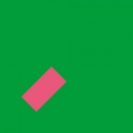19. Gil Scott-Heron & Jamie xx
"We're New Here"
(XL)
Jamie xx has produced some of the finest remixes of the last couple of years. His versions of Adele's Rolling in the Deep, Florence + the Machine vs The xx's You Got the Love and Radiohead's Bloom are all fine illustrations of his ability to "shuffle" a tune. But his greatest achievement to date is the fantastic We're New Here, an ambitious reworking of Gil Scott-Heron's already brilliant album I'm New Here (an album which made last year's No Ripcord Top 50). I use the term "reworking" rather than remix, because most of the tracks on We're New Here bear little resemblance to the originals, the songs often having been entirely reconstructed. With basslines, beats and samples added, Jamie's work is a wholly different experience to Gil's, and one of the most avant-garde and forward-thinking albums of the year. (Craig Stevens)
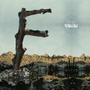18. Feist
"Metals"
(Polydor)
The magic of Metals resides somewhere between a whispered lyric and a full orchestra hit. It seems to contradict, reinvent and reinforce itself track after track, but Leslie Feist's deft touch allows each song to inhabit its own niche, while contributing vitally to the whole album. Feist's voice is commanding yet lithe, and the album maintains both cohesiveness and impressive variety: A Commotion features staccato strings and a shouted chorus; on Anti-Pioneer, Feist inflects her vocals with subtle anguish; Cicadas And Gulls is stripped-down acoustic. Most of all, Metals manages to be expansive while maintaining an alluring intimacy and this incredible contradiction, among its many others, makes for one powerful album. (Andrew Davison)
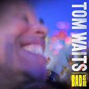17. Tom Waits
"Bad As Me"
(Anti-)
2011 saw the first studio release from Tom Waits since 2004’s Real Gone, the refreshingly solid Bad As Me. Though Waits’ familiar brand of gruff eccentricity and primal poetic prowess is retread throughout the album, Bad As Me is an able demonstration of an artist whose age has only pushed him to remain relevant and worthy of his loyal following. The oil-caked locomotion of a song like Chicago, Marc Ribot and Keith Richards in tow, excites the senses and romanticizes the urban jungle, while a song like Kiss Me evokes lounge-bred second-hand smoke and a bottomless glass of liquid misery. Hell Broke Luce, Waits’ expletive-laced anti-war stream of consciousness airs like a protest on the battlefield, hostility’s true victim the humanity that Waits will otherwise narrate while it’s either on the cusp of hip-swinging good time (Satisfied) or in the midst of endearment and possible heartache (Last Leaf). Waits’ voice continues to enjoy longevity, his truth a reward to those of us lucky enough to notice. (Sean Caldwell)
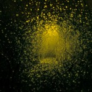16. The Antlers
"Burst Apart"
(V2)
On the heels of 2009’s heart-shattering Hospice, The Antlers’ eagerly anticipated sophomore album (fourth if you include Peter Silberman’s solo projects under the same name) proves only slightly less depressing but no less gorgeous. Burst Apart showcases Silberman’s strengthened voice and a more comfortable, confident band through a series of vignettes. From the beginning, we are taken on a journey through one of the most atmospheric, layered soundscapes in recent memory with lyrics as strong as Peter has penned before. By the time we get to the end, we feel like we have been through every experience Silberman has shown us. With Burst Apart we finally have an album to portray love for what it is: a risk, but a necessary one if you’re “not going to die alone”. It is among the most emotionally-sobering and hard-hitting albums you can privilege your ears with. (Forrest Cardamenis)
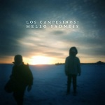15. Los Campesinos!
"Hello Sadness"
(Wichita)
Los Campesinos! have developed an awful lot since the hyperactive, twee pop of their 2008 debut, Hold On Now, Youngster…, especially considering they're perhaps the biggest "cult" band in Britain. Now on their fourth album, they've refined since last year's brilliant (but inconsistent) Romance Is Boring, dispensing with their glockenspiels and yelps. Instead, this is the most immaculately-produced LC! record yet, thanks to Jon Goodmanson's ability to harness their characteristic maximalism, and accordingly, Gareth's lyrics tend towards more rewarding extended metaphors rather than snide one-liners, while retaining his knack for ugly detail. LC!'s fanbase is so devoted because their tastes mature along with the band's songcraft, and although it's a grower, Hello Sadness is their most perfectly-formed work to date. (Stephen Wragg)
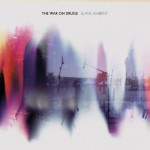14. The War on Drugs
"Slave Ambient"
(Secretly Canadian)
The grandeur of the expansive ambience in Slave Ambient is one that won’t be found on many albums this year. Unlike so many bands that try to incorporate a sense of sublimity into their music (U2 and Coldplay come to mind), Philadelphia-natives The War on Drugs have humility. Even in the crescendos and climaxes of songs like Come to the City and Your Love is Calling My Name, frontman Adam Granduciel seems content to let his voice ride the soundscape. Slave Ambient is an irrefutable modern masterpiece. (David Hogg)
13. Destroyer
"Kaputt"
(Dead Oceans)
Some artists don't always succeed with a direction change but Vancouver’s Destroyer have knocked it out of the park with Kaputt - their 10th album. It's a kind of departure that demands a sudden shift as a follow-up to 2008's unsatisfying Trouble in Dreams, this time creating a glassy world of comfortable blankness, channelling the velvety soundscapes of Avalon-era Roxy Music and employing purely decorative sax solos, strokes of flute and treated trumpet over empty washes of synth, linndrum (mixed with live drums) and fretless bass. Singer-songwriter Dan Bejar, a brilliant lyricist, sounds relaxed and focussed - fiercely casual even - leaving time for the music to be music and enjoy an absence of chord structure tyranny. Kaputt is everything that people make fun of you for enjoying: Christopher Cross or late-era Steely Dan, yet it’s an album of both beauty and intelligence, providing refreshing insights into 80s ambient and new romantic terrain, and with the record’s sparsely placed pockets of density it is truly a breath of fresh air among a golden age of Canadian music. (Pierce Brown)
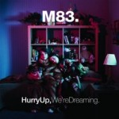12. M83
"Hurry Up, We're Dreaming"
(Naïve)
Over the past ten years, M83’s Anthony Gonzalez has made the transition from intricate and predominantly instrumental electro-shoegaze to huge electro-rock anthems. Hurry Up, We're Dreaming is likely to be hated by fans of the older material but loved by new converts. It is so grandiose that it becomes almost over-the-top in places; it is, after all, a whopping 22 track double album, a monumental task for even the best musicians. Luckily, Gonzalez gets it almost spot-on, with just the right number of instrumental segue pieces keeping the pace expansive, but not laboured. Some of the songs on here are the strongest he’s ever written; Midnight City and New Map in particular being especially great. It fails in places – there are a few moments of boredom where it seems as though he is struggling to flesh out a weak idea, but these are few and far between. Overall, this is one of his best records, and a more-than-respectable attempt at an album of this scope. (Andrew Hirst)
11. Real Estate
"Days"
(Domino)
A common criticism made about Real Estate is how facile and oversimplified they make their songs. It’s easy to dismiss a ringing, twangy melody and label it as merely proficient, especially when there are copious niche labels that specialize in providing this kind of music at a set value. The reasons to explain their worth on modern pop music are just as simple. The Jersey foursome do have a remarkable sense of melody – yes, melody, a term that’s universally associated with any artist who follows a linear pattern of musical tones. It’s a standard, but the way in which they bring to life a chromatic vivacity to such repetition is uncontested – the tuneful guitar variations of Municipality, the bittersweet reverie of Three Blocks and the joyful elation of It’s Real. All these moments capped with a subtle progression of production values, a component that would’ve augmented the mood in their needlessly achromatic debut. As much as one tries to fully gauge the reasons why, leaving out any logic is best - the likeability of Real Estate is hard to explain because it already lives within you. As long as there’s a reason to reflect in the past, they will always provide just the appropriate soundtrack to enliven one’s gradually diminishing memory. (Juan Edgardo Rodriguez)
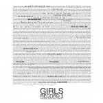10. Girls
"Father, Son, Holy Ghost"
(Turnstile)
Father, Son, Holy Ghost is that rare album that manages to remind listeners of countless great bands without sounding like any of them. Calling on the breezy guitars of R.E.M. and often adapting a vocal style similar to Elliott Smith’s, Christopher Owens’ influences are worn on his sleeve but hidden by his great songwriting and Chet White’s layered production that showcases Girls’ inclination to make sure that every instrument is always doing something important. It seems impossible to think that a band with just two albums is so comfortable balancing their influences with their own dancing riffs and emotive solos, but that’s exactly what this album gives us, perfectly timed to make us feel exactly what Owens and White want us to. With their alternately emotive and playful lyrics and the alternately light and callousing guitar parts, Girls has given us something to savor. (Forrest Cardamenis)
9. Gang Gang Dance
"Eye Contact"
(4AD)
Gang Gang Dance's fourth album begins with the by now almost famous dictum, "I can hear everything, it's everything time..." As a manifesto it's fitting, as Eye Contact doesn't just skip over the boundaries of musical style, it smashes them down. Many reviews of the album this year have focussed on this musical polyglottism, but few have remarked on the unadorned, unselfconscious joy that these songs pervade. Led by vocalist Lizzi Bougatsos' melodic singing, and propelled by new drummer Jesse Lee's tight, almost motorik polyrhythms, each track is like a crystalline flower, multi-facteted, surface-smooth, but with depths of colour. Opener, Glass Jar, is 11 minutes long, but passes like a four minute pop song, with prog-like synths, guitar solos, even hints of steel drum. Short, interstitial sections of melody or sampled sound provide respite between tracks, giving the album structure and form, like an expertly arranged dance set. The song-writing is skillful, the production is immaculate, the musicianship is amazing. No other album this year has so successfully married a forward-thinking, experimental technique with simply great pop music. Let England Shake may be getting all the critical plaudits, but Eye Contact is the album I have come back to most often, and will continue to do so. (David Wood)
8. Katy B
"On A Mission"
(Sony)
Only a short while ago, the suggestion that dubstep would inspire a BRIT-school alumnus to create an album of chart-bothering songs would probably have acted as its death knell. Yet, instead Katy B's On A Mission gave the increasingly navel-gazing genre a much needed kick up the arse. Of course Katy isn't the school's typical graduate, going from that manufactured pop factory to working with former-pirate radio station Rinse and some of its most bleedingly cutting-edge talent in Benga and Skream, whose production went beyond the now-clichéd dubstep wub-wub-wub (though it is present, propping up her properly amazing debut single Katy On A Mission) to take in (nu-)rave and electro amongst many other influences. Perhaps the key to On A Mission's appeal though was that, in addition to its gobbiness and attitude, it also managed to be beautiful, adorable and a great straight-up pop album in its own right too. (Mark Davison)
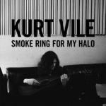7. Kurt Vile
"Smoke Ring for My Halo"
(Matador)
Kurt Vile is not the best singer you will ever hear. Nor is he any kind of virtuoso musician. What sets him apart is excellent songwriting - and on this, his fourth album, he's toned down the often raucous feel of his previous albums into a gentler, more introspective record. Sonically, it retains some of the lo-fi fuzz that he’s always been known for, but some careful layering of sounds gives Smoke Ring For My Halo real clarity and depth. Lyrically, his matter-of-fact ponderings about life are impossible not to like. (Joel Stanier)
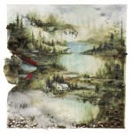6. Bon Iver
"Bon Iver"
(4AD)
The answer is yes. Everyone with an interest in indie music, whether hobbyist, artist, label, or critic, wondered whether Justin Vernon could rekindle the morose magic that defined For Emma, Forever Ago. It was a stunning debut that palpably and genuinely reflected the emotion derived from its creator’s circumstances. But those circumstances were, well, circumstantial. The “bon hiver” had passed, and Vernon emerged from the woods with passionate fans, opportunities for A-list collaborations, and considerably more resources for a follow-up that would be hyped to the max. A sophomore slump would have been understandable, even expected. But no, Vernon exercised discretion. He extricated Emma’s kernel of greatness and fortified it with a broader sound and more ambitious instrumentation using a full band. Lyricism on Bon Iver suffers a bit, toeing the line between abstract and plain unintelligible, but mood is the clear focal point here. Bon Iver is as desolate as it is delicate, haunting and hibernal. It is what we all hoped it would be: one of the year’s best albums. (Ben Jones)
5. St. Vincent
"Strange Mercy"
(4AD)
Lyrically, Annie Clark opened up a lot more on Strange Mercy than its predecessor, Actor, but strangely for an undeniably more personal record, the results are more expansive than they are inverted. Fuller, richer and more varied; from the irresistible and intoxicating pop delights of Cruel to the delicate and beautiful laments of the title track. Her voice cloaked in character and humble beauty, coupled with more experimental sonic leanings, the results are a consistent delight. Even the closing tale of depression, Year of the Tiger, is somehow rousing in its delivery, as though it’s closing a period in her life that one presumes and hopes she has now overcome. (Daniel Dylan Wray)
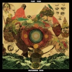4. Fleet Foxes
"Helplessness Blues"
(Bella Union)
Robin Pecknold could have taken the easy route and make a quick duplicate of Fleet Foxes’ debut. Instead, for this long-gestating effort the songs have become more personal, dealing with loneliness and the grieving aftermath of a broken relationship. From the plaintive Montezuma to the devotional Grown Ocean, the musical palette has grown exponentially, adding Americana fiddle, Tibetan singing bowls, and Native-American pulsing rhythms to the mix. High points in this thoroughly satisfying record are Lorelai, the two-tiered title song, and The Shrine/An Argument, whose mid-song jazz skronk suggests that this group will continue to surprise us. (Angel Aguilar)
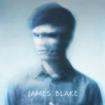3. James Blake
"James Blake"
(Atlas/A&M)
It’s unfortunate that the inevitable bastardization of dubstep had to happen so soon – it was the year for club promoters, hack DJs, and hard liqueur sponsors to maximize profit by trivializing its ethos to nothing more than mindless build-ups and gratuitous touchy-feely. Aside from all that, a nascent UK producer by the name of James Blake dared to give some soul while tipping his hat to the well-respected purveyors of the genre. What’s noteworthy about James Blake is that it adds substance to a brand that is mostly appreciated for its abstract workflow process. But truly, Blake’s strength lies in how he articulates a tangible quality through all the cutting and splicing – even when he re-shifts his voice (which is commanding in its own right), inch by inch, it conveys the sparse, yet layered metronomic arrangements with an underlying sense of seclusion. Once the gospel tinged Measurements triumphantly closes with barely a murmur, you’ve officially converted to Blake’s synthesized rapture. (Juan Edgardo Rodriguez)
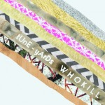2. tUnE-yArDs
"W H O K I L L"
(4AD)
All too often, people who try to make wonky, inventive pop music get it all wrong. Sometimes the songs aren't there, sometimes odd instrumental choices make it look like their "kookiness" is forced, sometimes there's no cohesiveness and flow to the work, and sometimes it's all of those things. However, tUnE-yArDs (aka Merrill Garbus) neatly sidesteps any such problems by crafting an album which is full of hooks, brave, raw and utterly addictive. Her sugar-sweet melodies are accompanied by horns, huge beats and brash, confrontational vocals, but faced with the prospect of keeping so many plates spinning at once, Garbus makes it look easy. Es-So lurches from bar to bar, Gangsta is an inspiring call-to-arms, and Doorstep displays brittleness and emotion behind its sing-song vocals. Anyone who was initially put off by the text-speak approach to capitalisation - and I include myself in that - should now have realised how wrong they were. W H O K I L L is a confident and intriguing record that fully deserves its place so near the top of this list. (Joe Rivers)
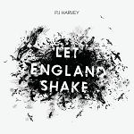1. PJ Harvey
"Let England Shake"
(Universal/Island)
Let England Shake is a staggeringly bold and ambitious work, which manages to make an array of political and anti-war statements without ever descending into the realm of preachiness. It's not even a stretch to suggest that Harvey's lyrics constitute some of the finest war poetry of the current century. Let England Shake alludes to a string of conflicts involving British troops spanning nearly 100 years, from Gallipoli in World War I (All And Everyone) to Afghanistan (The Words That Maketh Murder). There is a strong critical voice present throughout, which is most evident in The Last Living Rose ("the grey, damp filthiness of ages") and The Glorious Land ("our land is ploughed by tanks and feet"), but the line that resonates most deeply with me comes from standout track The Words That Maketh Murder. As Harvey declares "I've seen and done things I want to forget; I've seen a corporal whose nerves were shot", I am acutely reminded of the lasting impact of modern warfare on the mental health of those involved. While the Afghan War has been raging for over ten years, there has been a distinct lack of comment on the conflict (and politics in a wider sense) from within the musical community. This is nothing short of disgraceful. There will always be plenty of room for songs about love, sex and hedonism, but we also need records of Let England Shake's calibre once in a while, if for no other reason than to remind us that there are bigger things in life than the coming weekend. (David Coleman)
. . .
16 December, 2011 - 06:49 — No Ripcord Staff
So, PJ Harvey adds the title of No Ripcord Album of the Year 2011 to her already-impressive haul. Have we made the right decision? What have we missed? We'd love to hear from you, so let us know your thoughts using the Disqus box below. There's a Spotify playlist of tracks from our Top 50 here, and if you're interested in how each of our writers voted, the full list can be found here.